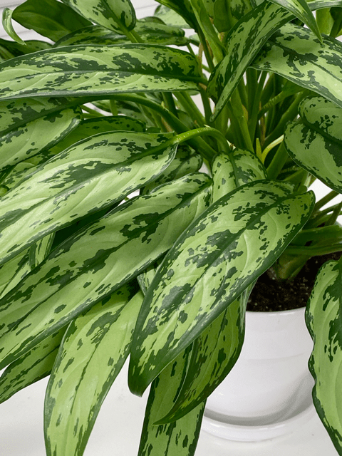
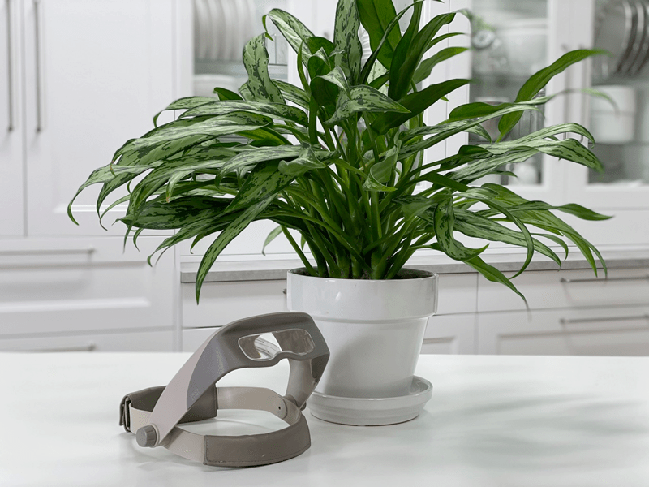
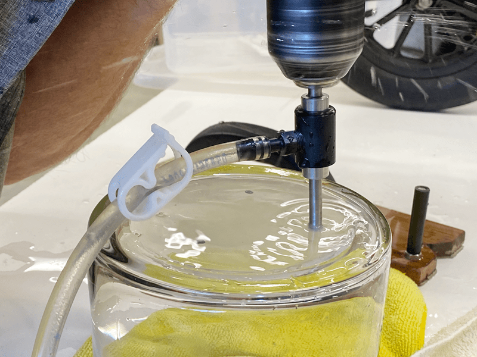
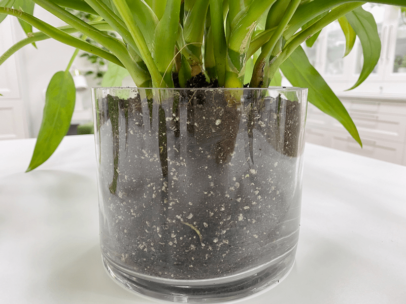

Aglaonema Cutlass | Chinese Evergreen | Care Difficulty – Easy
This plant has a retro-chic quality, having been an interior design staple since the 1970’s. It will tolerate more shade and cooler temperatures than other varieties, making it a useful, decorative addition across homes and offices. It has glossy, dark-green leaves that are strikingly marbled with silvery green chevrons. Chinese Evergreens grow relatively slowly and take a long time to outgrow their pots, meaning ongoing maintenance is minimal.
I paid $12.99 for this plant at our local grocery store.
I have heard people say that plants are therapeutic, and I have come to learn that it rings true for me. The time and care that they require have become an active meditation for me. Plus, in my past, I was heavily armed with a type “A” personality. Those with type A personality tend to be perfectionists, overachievers, and workaholics. Check, check, and check! I know there are benefits to these traits, but for me, I became very rigid.
So how did plants help me with my type “A” personality? Oddly enough, the organic free-flowing forms of each plant brought a sense of calm and stripped away the need for everything to be in perfect form. I used to decorate with artificial plants because I could control the color, size, and shape. You can’t really do that with real plants. They are living and have a personality of their own. I hope that makes sense. Anyway, let’s get on with what these lovelies require for a happy life.
Light Requirements
These lovely plants will thrive in low to bright light levels. The lighter the leaf color, the higher the required light levels (this rule applies to most plants). Plain, dark-green varieties will thrive in near shade, whereas the lighter, variegated types need well lit, bright conditions. Avoid direct sunlight, as this will scorch the leaves. I have one that sits about four feet away from a north-facing window.

Water Requirements
It has been my experience that these particular plants like to dry out between waterings, so feel the soil with your finger a few inches down to ensure it isn’t moist right beneath the surface.
If your plant is in a bright location, then you will want to water it when the soil is dry halfway down the pot. If you have your plant in fluorescent or lower light conditions, then it’s best to let the soil dry out almost all the way to the bottom of the pot before watering thoroughly.
Look out for overwatering with this plant, as it can be prone to root rot. The key signs of overwatering are yellowing or mushy stalks or leaves. If you find this occurring, then it’s best to let the soil dry out completely before watering again.
Temperature Requirements
It’s best to keep your plant away from hot and cold air drafts, which includes window breezes, heaters, and air conditioning. It prefers a temperature of 70 and 85 degrees (F). Overnight temperatures should not vary more than a 10-degree drop.
Humidity Requirements
Chinese Evergreens can tolerate less humidity than some other plants, yet it will still appreciate your efforts to improve surrounding humidity levels, either via regular misting or using a pebble tray.
Fertilizer – Plant Food
Fertilize roughly every six weeks during the growing season (spring-fall) with a 1/2 strength diluted complete fertilizer. If you overfeed a plant, you can remove the houseplant from its current soil and repot it in fresh soil. This technique is undoubtedly the best way to get rid of the excess nutrients affecting your plant. Alternatively, you can flush the soil, which involves drenching the soil with water and letting it drain out. Repeat this several times to help the soil get rid of excess fertilizer.
Additional Care
- Remove any dead, discolored, damaged, or diseased leaves and stems as they occur with clean, sharp scissors.
- Clean the leaves often enough to keep dust off of them. This is especially important if the plant is in a lower light location.
- Avoid using commercial leaf-shining products on this plant.
Plant Characteristics to Watch For
Diagnosing what is going wrong with your plant is going to take a little detective work, but even more patience! First of all, don’t panic and don’t throw out a plant prematurely. Take a few deep breaths and work down the list of possible issues. Below, I am going to share some typical symptoms that can arise. When I start to spot troubling signs on a plant, I take the plant into a room with good lighting, pull out my magnifiers, and begin by thoroughly inspecting the plant.
The stalks are turning yellow and brown.
- Yellow and brown stalks are typically a sign of overwatering or too much moisture being held in the soil. Aglaonema stalks retain water for the plant in periods of drought. If there is too much water in the soil and the stems are also full of water, this can cause the plant to rot.
- Solution: If this occurs, hold off on water, aerate the soil, and prune any rotting stalks. Water the plant again only when the soil has dried entirely throughout the pot.
Yellow or brown leaves.
- If you just brought the plant home, it can be due to transplant shock. Transplant shock is normal, and almost all plants experience some form of it by losing a few leaves or showing some discoloration upon arriving in a new environment.
- Solution: Prune off any unsightly leaves and be sure to follow the care instructions. If the problem persists, see if light or water needs adjusting.
The leaves are drooping.
- Droopy leaves can be an indication of improper light or water requirements. In too much direct sun, the plant can become weak and floppy. In not enough light, the leaves can also begin to wilt and show signs of weakness.
- Solution: Rule out if it’s a water or light issue. If you feel the plant is getting too much direct sun, relate it or hang a sheer curtain over the window to filter the light. If the location doesn’t appear to be an issue, check how the plant is being watered.
A combination of yellow and brown edging.
- The combination is often a result of too much water.
- Solution: Allow the soil to dry out before watering again. Adjust your watering schedule to avoid overwatering the plant.
Crispy, fully yellow or brown leaves.
- Check the soil immediately; this is typically a result of too little water.
- Solution – Take the plant to the sink and saturate the soil until water runs out the bottom of the drainage holes. If the soil is compact, you may want to aerate the soil by poking a stick into the soil in several spots. This helps bring oxygen to the roots and also helps in getting the water to the roots.
The plant is bushier on one side than the other.
- A plant can grow unevenly when only one side of the plant is being exposed to more light.
- Solution: Rotate your plant periodically to ensure even growth on all sides.

Common Bugs to Watch For
If you want to have healthy houseplants, you MUST inspect them regularly. Every time I water a plant, I give it a quick look-over. Bugs/insects feeding on your plants reduces the plant sap and redirects nutrients from leaves. Some chew on the leaves, leaving holes in the leaves. Also watch for wilting or yellowing, distorted, or speckled leaves. Pests can quickly get out of hand and spread to your other plants.
-

-
Mealybugs
-

-
Scales
-

-
Spider mites
-

-
Aphids
IF you see ONE bug, trust me, there are more. So, take action right away. Some are brave enough to show their “faces” by hanging out on stems in plan site. Others tend to hide out in the darnedest of places, like the crotch of a plant or in a leaf that has yet to unfurl.
- Mealybugs look like small balls of cotton. They can travel, slooooooowly, but they have a strong will and determination! Though they are slow-moving, if any plant is touching another, there is a chance the mealybug will hitch a ride on a new leaf and spread. They breed like rabbits of the insect world. Females can deposit around 600 eggs in loose cottony masses, often on the underside of leaves or along stems.
- Scales are dark-colored bumps that are primarily immobile insects that stick themselves to stems and leaves. They are rather inconspicuous and don’t look like a typical insect. They can range in color but are most often brownish in appearance. They’re called “scales” primarily due to their scale-like appearance on a plant, due to waxy or armored coverings. They are often seen in clumps along a stem, sucking away at the plant’s juices with their spiky mouthpart.
- Aphids are more commonly seen if you place your plants outdoors. Aphids are indeed bugs. They are tiny insects that, along with black, also come in shades of yellow, green, brown, and pink. They are often found on the undersides of leaves.
- Spider mites are more common on houseplants. They are not insects – they are related to spiders. These appear to be tiny black or red moving dots. Spider mites are nearly invisible to the naked eye. You often need a magnifying lens to spot them, or you may just notice a reddish film across the bottom of the leaves, some webbing, or even some leaf damage, which usually results in reddish-brown spots on the leaf.
Toxicity
These plants can cause irritation if eaten, and the sap is a skin and eye irritant. Keep out of the reach of children and animals. Be sure to wash your hands after any pruning or cleaning of this plant. Better to be safe than sorry.
-

-
My husband and I drilled holes into a glass vase so I could use it as a planter.
-
-
08/12/2020 – More growth. See below about the pot.
-

-
Up close shot of the glass plant pot.
Update 08/12/2020
I like to share updated photos because it’s fun to witness the growth of a plant. As you worked your way through this posting, you should have already stumbled upon three photos that show just how much this plant has changed since January. This plant receives its light from overhead fluorescent lights in my studio and as you can see, it is doing very well.
I noticed that this plant was calling for more frequent watering which usually indicates (to me) that the soil needs amending. I told my husband that it would be so neat if I could plant it in a glass container (pot) so I could monitor the soil and the roots. I told him that I had a vase but it didn’t have drainage holes. Bob quickly informed me that we had the tool that would allow us to do that very thing… so we headed off to the shop. Within 10 minutes, I had a clear glass plant pot with drainage holes in it. I will share more updates in time as the roots find their way to the edges of the glass pot. blessings, amie sue
© AmieSue.com